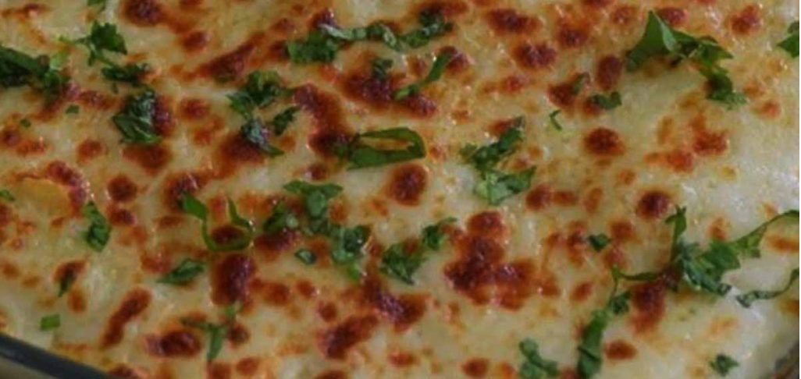

latest Recipe
Cook it with potatoes
Barley Soup
Our Vegetable Barley Soup recipe makes a homey starter to go with weekend dinner.
With a variety of
vegetables,
herbs and a pesto finish, you'll have flavour and freshness in a bowl!
- In a large saucepan, heat oil over medium high heat. Cook onions, carrots and celery just until tender. Add garlic and cook one minute more.
- Stir in broth, parsley, thyme, bay leaves, barley, tomatoes, and potatoes. Bring to a boil, reduce heat to maintain a simmer, cover and cook until barley and potatoes are tender, about 15 – 20 minutes.
- Add zucchini and green beans and cook 5 minutes more.
- Serve in bowls with a spoonful of pesto, a drizzle of olive oil and grated Parmesan.
It is best eaten cold- Heat oil in large saucepan over medium to high heat. Cook ground beef, breaking up with spoon, 6 minutes or until no longer pink; drain off fat. Reduce heat to medium.
- Add onions, carrots, garlic, Italian herb seasoning and pepper, optional; cook, stirring 5 minutes until tender.
- Stir in broth, soup, water, vinegar and pasta. Cook, stirring occasionally, until boiling. Simmer, covered, stirring occasionally over medium to low heat for 6 minutes until pasta is tender.

Hearty Bolognese Soup
Customer Reviews (2)
1- Amir

Helpful recipe, thanks
2- Jammy
Thanks